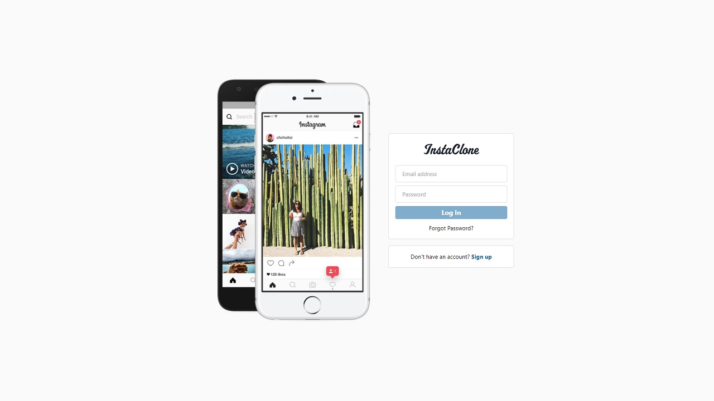
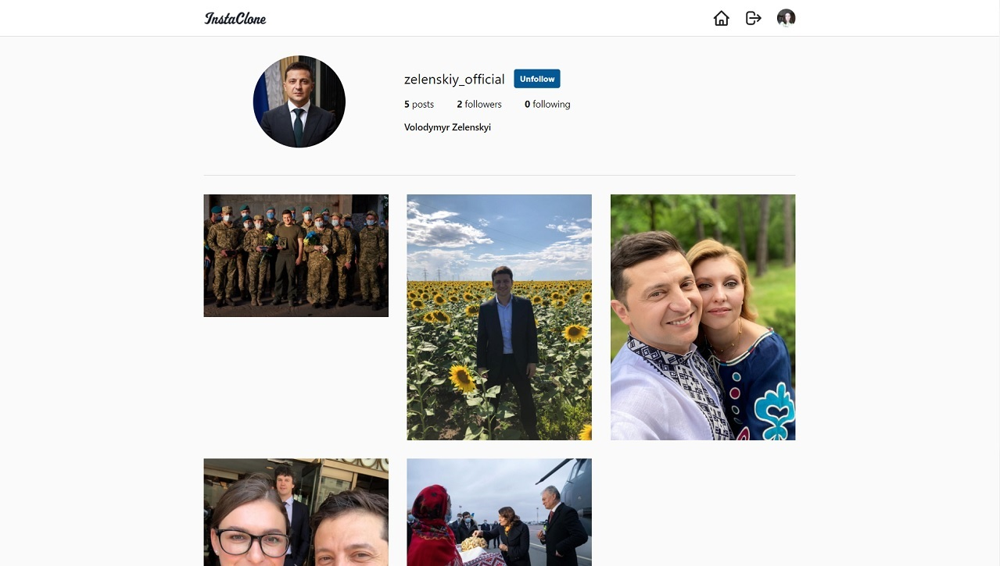
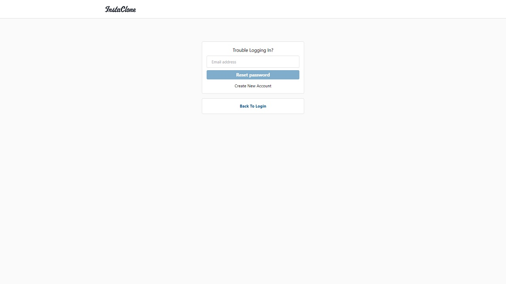

Instagram Clone (React)
Features of the website:
- - Pages within the app: login, sign up, forgot password, dashboard & the user profile page
- - Some pages are public and some are private with auth listeners
- - Firebase Auth handles all the authentication process and Cloud Firestore handles all the data
- - The data is retrieved using custom hooks
Live Link ➡
Technologies:
- - React (custom hooks, useContext, useState, useEffect, useRef)
- - React Router
- - Firebase (Firestore/auth)
- - Tailwind CSS
- - Lighthouse
- - Vercel
Login Page (Public Page)

Profile Page

Reset Password Page

Acknowledgments:
- - Tips used from: Karl Hadwen (Scrimba & YouTube); freeCodeCamp; Firebase documentation; React documentation; React Router documentation